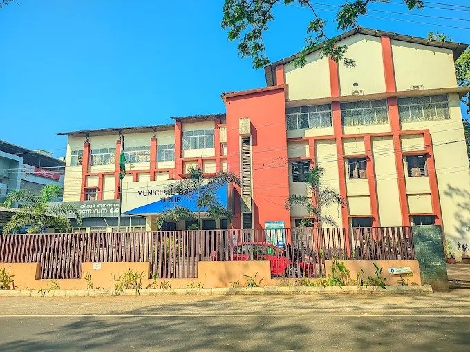
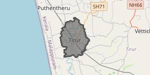

WebGIS — Geography and Spatial Analysis
Tirur Municipality
Geographical Information System
About the Study Area

Tirur Municipality is located in Malappuram district, Kerala. This WebGIS project presents geographical and administrative information about the study area, including its location, boundaries, wards, roads, and other important spatial features.
Location Map
The location map provides a geographical overview of the study area within its regional setting.

Interactive GIS Map
Explore the geographical features of Tirur Municipality using the interactive WebGIS map below.
To save data on slow connections, the interactive GIS map loads when you scroll here or click below.
Geographical Information
The following details describe the administrative and geographical setting of the study area.
Administrative Details
- District: Malappuram
- Taluk: Thrikkandiyur
- Block: Tirur
- State: Kerala
Geographic Setting
- Physiography: Midland / undulating terrain
- Drainage: Tirur River Basin
- Surrounding Areas: Athavanad, Thirunavaya
Project Information
Programme: MSc Geography and Disaster Management
Project: WebGIS for Geographical and Administrative Analysis
Date: 09 October 2026
Reference Website: Local Self Government Department, Kerala